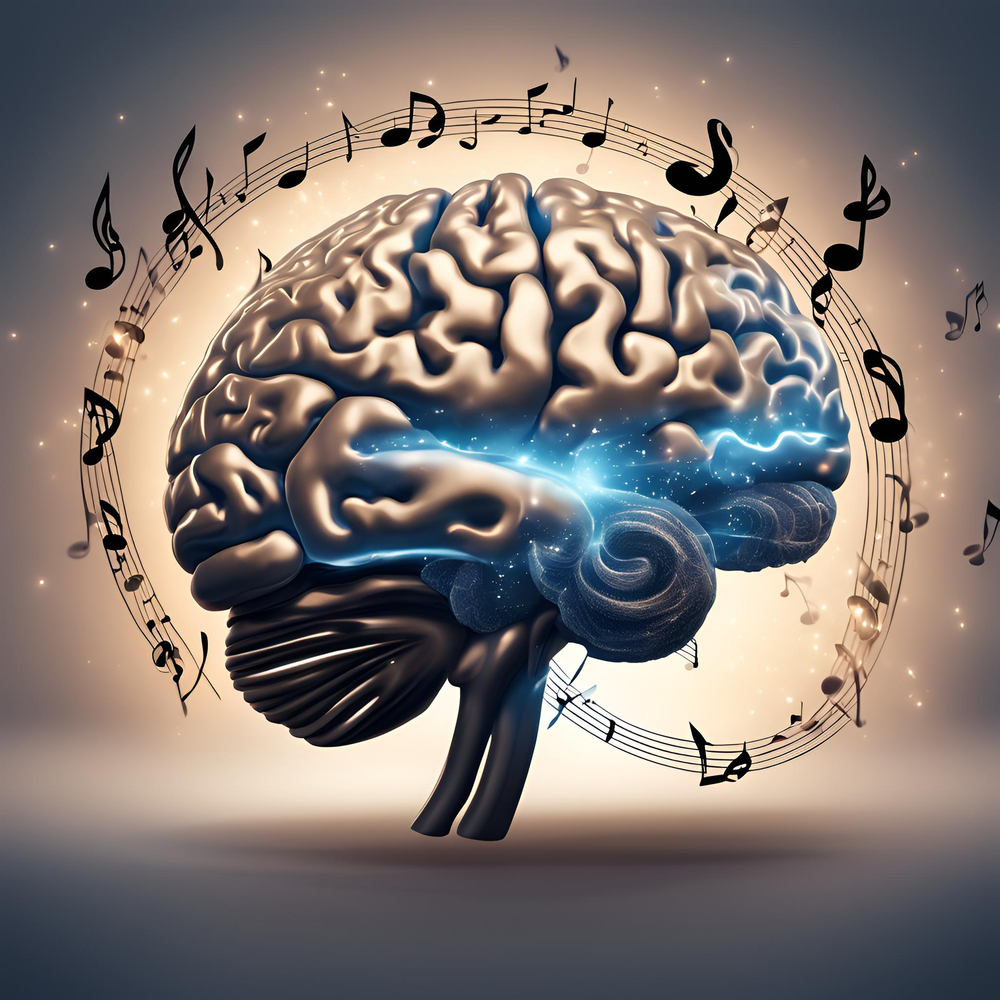

Viriketoiminnan merkitys

Viriketoiminta on tärkeä osa ihmisten hyvinvointia ja elämänlaatua. Se tarjoaa mahdollisuuksia osallistua monenlaisiin aktiviteetteihin, jotka tukevat fyysistä, psyykkistä ja sosiaalista terveyttä. Se edistää ihmisten aktiivista elämäntapaa, lisää yhteisöllisyyttä ja luo merkityksellisiä kokemuksia. Viriketoiminnan hyvinvointivaikutuksista on useita tutkimuksia ja artikkeleita. Tälle sivulle on koottu joitakin lähteitä, millaisia hyvinvointivaikutuksia viriketoiminnalla voi ihmiselle olla.